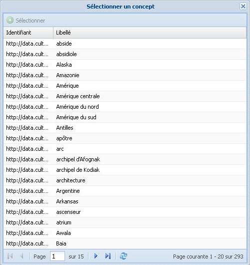

Relations hiérarchiques ou associatives
Ajout d'une relation hiérarchique ou associative⚓
ProcédureAjouter une relation hiérarchique ou associative⚓
RemarqueRemarque⚓
Cette procédure explique à la fois comment ajouter une relation hiérarchique (Concept parent ou Concept enfant) et une relation associative (Concept associé) à un Concept.
Dans la zone d'édition du
Concept, cliquez sur le bouton
Ajouter...correspondant au type de relation que vous souhaitez ajouter.Cas particulier du Concept enfantDans le cas d'un Concept enfant, un menu déroulant s'affiche.

Il offre 2 options :
Sélectionner un concept existant(option décrite dans cette procédure),Créer un nouveau concept(voir : Création de Concepts).
La fenêtre
Sélectionner un concepts'affiche.RéglementaireFenêtre Sélection d'un Concept⚓
La liste des concepts disponibles (concepts orphelins ou déjà structurés dans l'arborescence) est paginée, avec la possibilité de naviguer de page en page ou d'aller directement à une page donnée.
Par défaut, les concepts sont triés par ordre alphabétique. Cliquez sur une barre de titre de la fenêtre pour inverser l'ordre de tri.
Cliquez sur la ligne du concept de votre choix, puis cliquez sur

Sélectionneren haut de la fenêtre.Le
Conceptest sélectionné ; la relation est ajouté.
Cliquez sur

Enregistrerpour sauvegarder les modifications apportées auConcept.
Suppression d'une relation hiérarchique ou associative⚓
ProcédureSupprimer une relation hiérarchique ou associative⚓
RemarqueRemarque⚓
Cette procédure explique à la fois comment supprimer une relation hiérarchique (Concept parent ou Concept enfant) et une relation associative (Concept associé) d'un Concept.
Cliquez sur le bouton
 à droite de la ligne du
à droite de la ligne du Conceptavec lequel vous souhaitez supprimer la relation.Cliquez sur
Enregistrerpour sauvegarder les modifications apportées auConcept.